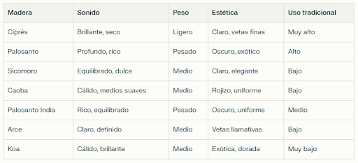

The flamenco guitar is an instrument that captivates for its expressiveness, its lightness and its ability to transmit unique nuances. Behind its unmistakable sound lies a complex architecture, where each element fulfills an essential function. Today we will focus on the sides, also known as the sides of the guitar, a fundamental piece that, although it usually goes unnoticed compared to the soundboard or the back, decisively influences the character and projection of the instrument.
What are hoops?
The sides are the pieces of wood that make up the sides of the guitar, joining the soundboard to the back and closing the body of the instrument. Although they are part of the soundboard, their function goes beyond mere structure: the sides contribute to the tone, response and comfort of the guitar. They are placed “above” the soundboard in terms of prominence in the construction, since the box is usually the first focus of attention, but the sides are the lateral skeleton that shapes and defines the ergonomics and acoustic character of the instrument.
Structural and acoustic function
From a structural point of view, the sides add strength and stability to the body of the guitar. They are responsible for maintaining the characteristic curvature of the instrument and for supporting the tension generated by the strings. In addition, the internal reinforcements and the socket, the connection point with the mast, are fixed on them.
On the acoustic level, the rings influence the transmission of vibrations between the top and the back. Its stiffness, thickness and type of wood affect the speed with which the sound expands and, therefore, the brightness, volume and response of the guitar. Although they have traditionally been given a secondary role to the soundboard, luthiers know that a proper choice of sides can make the difference between an ordinary guitar and an exceptional one.
Traditional woods: cypress and rosewood
In the classical flamenco guitar, two woods reign above the others: cypress and rosewood.
Cypress
Spanish cypress (Cupressus sempervirens) is the material par excellence in traditional flamenco models. Its light color, light weight and porosity give it a bright, dry and fast sound, ideal for the strumming and percussion characteristic of flamenco. The cypress hoops add lightness to the instrument, making it easier to play and transport, and contribute to that “sharp” tone so appreciated by flamenco guitarists.
Among the advantages of cypress are:
- Lightness: reduces the overall weight of the guitar, making it more comfortable.
- Brightness: Promotes projection and clarity in the treble.
- Speedresponse: ideal for flamenco techniques such as strumming or picado.
Rosewood
Rosewood (Dalbergia spp.), especially from India and Brazil, is another of the classic woods for sides, although its use is more frequent in concert or “black” flamenco guitars. Rosewood is denser and darker than cypress, which results in a deeper sound, with greater sustain and harmonic richness. Guitars with rosewood sides typically have higher volume and a rounder response, sacrificing some of the immediacy and brightness of cypress.
Advantages of rosewood:
- Sustain and depth: ideal for solo pieces and melodic accompaniment.
- Aesthetics: dark and exotic veins that embellish the instrument.
- Durability: great resistance to the passage of time and humidity.
Other less common woods
Although cypress and rosewood are the undisputed kings in the flamenco tradition, there are other options that, although less common, offer interesting nuances in both sound and aesthetics.
sycamore
Sycamore (Acer pseudoplatanus) is a light wood, with smooth grain and intermediate weight. It is occasionally used on flamenco guitars for its balanced response and elegant appearance. Sycamore provides a somewhat sweeter and less aggressive sound than cypress, with good projection and clarity.
Mahogany
Themahogany(Swietenia spp.) is a classic wood in instrument construction, especially acoustic and electric guitars. In flamenco guitars, its use is less common, but it offers a warm sound, with pronounced mids and a smooth response. Mahogany is prized for its stability and ease of work.
Indian rosewood
TheIndian rosewood (Dalbergia latifolia)It is a variant of traditional rosewood, with similar characteristics but a slightly lighter shade and a more uniform grain. It is highly valued for its balance between sustain, projection and harmonic richness.
Maple
Themaple (Acer spp.)It is known for its hardness and striking grain. In flamenco guitars, maple provides a clear and defined sound, with good note separation and a very attractive aesthetic thanks to its wavy grains.
Koa
Thekoa (Acacia koa)It is an exotic wood native to Hawaii, famous for its beauty and warm, bright tone. Although its use in flamenco guitars is very minority, some luthiers experiment with koa to offer unique instruments, both in sound and appearance.
Comparison of woods for hoops

Considerations of hoops for the guitarist
The choice of hoops is not just a matter of aesthetics or tradition, but it directly affects the sound and the playing experience. A guitarist looking for lightness, immediacy and brightness will probably opt for cypress, while someone who wants depth, sustain and harmonic richness will lean towards rosewood. Alternative woods allow you to explore new sounds and personalize the instrument, although always under the premise that each guitar is unique and responds differently depending on the combination of materials and the hand of the luthier.
Conclusion
The sides are much more than just sides on the flamenco guitar: they are a key element in the construction, sound and personality of the instrument. Tradition has consecrated cypress and rosewood as favorite materials, but experimentation with other woods continues to enrich the guitar's sound universe. Choosing the right hoops is, ultimately, a decision that combines art, science and passion for music.